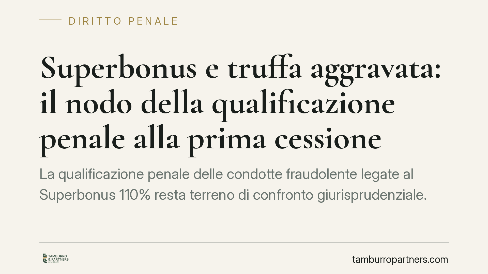

Superbonus e truffa aggravata: il nodo della qualificazione penale alla prima cessione
La qualificazione penale delle condotte fraudolente legate al Superbonus 110% resta terreno di confronto giurisprudenziale. Il tema centrale è se la creazione di un credito d'imposta inesistente integri truffa aggravata per il conseguimento di erogazioni pubbliche (art. 640-bis c.p.) e in quale momento il reato debba ritenersi consumato. Dalla risposta dipendono procedibilità, prescrizione e perimetro delle responsabilità dei soggetti coinvolti nella filiera.

Il quadro del contrasto interpretativo
La gestione fraudolenta dei crediti d'imposta nati dal Superbonus 110% ha generato un intenso dibattito sulla corretta qualificazione penale. Il punto non è pacifico: la giurisprudenza ha oscillato tra più inquadramenti.
Un primo orientamento riconduce la creazione di un credito d'imposta fittizio alla truffa aggravata per il conseguimento di erogazioni pubbliche (art. 640-bis c.p.), sul presupposto che il beneficio fiscale rappresenti una forma di contribuzione pubblica ottenuta con artifici e raggiri ai danni dell'Amministrazione finanziaria. Un secondo orientamento valorizza invece la disciplina tributaria, richiamando l'indebita compensazione di crediti inesistenti (art. 10-quater, D.Lgs. 74/2000). Non manca, infine, chi ipotizza la truffa semplice (art. 640 c.p.).
La distinzione non è teorica. Cambiano il trattamento sanzionatorio, le soglie di rilevanza e il momento consumativo del reato. Su questi profili si attende un intervento chiarificatore delle Sezioni Unite della Cassazione penale. In assenza di una pronuncia depositata con estremi verificabili, è corretto trattare la materia come controversa, evitando di presentare come definitivo ciò che tale ancora non è.
Il momento consumativo: perché conta
Uno dei nodi più delicati riguarda l'individuazione del momento in cui il reato si considera consumato. Secondo la tesi più rigorosa, la consumazione si perfeziona già con il primo atto che rende disponibile il credito fittizio nel circuito, ossia con la prima cessione sulla Piattaforma dedicata, quando il credito acquista una propria autonoma spendibilità.
L'anticipazione del momento consumativo produce effetti concreti sul calcolo della prescrizione. Se il reato si consuma prima, il termine inizia a decorrere prima: ciò tende, a parità di durata, ad avvicinare la maturazione della prescrizione, non a ritardarla. È un dato che incide direttamente sulla strategia difensiva e sulla valutazione dello stato dei procedimenti.
Quanto alla procedibilità, va evitata ogni generalizzazione: l'art. 640-bis c.p. è procedibile d'ufficio. Non si tratta quindi di un regime "diverso" in senso generico rispetto all'art. 640 c.p., ma di una fattispecie autonoma con proprio trattamento sanzionatorio, più severo rispetto alla truffa semplice.
Implicazioni pratiche per la filiera
Le conseguenze variano a seconda della posizione occupata.
Il generatore del credito (chi lo crea in origine, tipicamente sul presupposto di lavori mai eseguiti o sovrafatturati) è il soggetto più esposto: su di lui si concentra l'ipotesi di condotta fraudolenta principale.
Il cessionario che acquista il credito non risponde per il solo fatto dell'acquisto. La responsabilità penale richiede l'accertamento del dolo, cioè la consapevolezza della natura fittizia del credito o, quantomeno, la rappresentazione del rischio accettandone le conseguenze. Nessuna qualificazione automatica: l'elemento soggettivo va provato nel caso concreto.
Il fornitore che ha applicato lo sconto in fattura si colloca in posizione intermedia e la sua responsabilità dipende dal ruolo effettivamente svolto nella genesi del credito.
È importante sottolineare un principio di garanzia: qualunque sia l'orientamento accolto, non esiste alcuna presunzione di colpevolezza a carico di chi ha operato sulla Piattaforma. Il dolo resta oggetto di accertamento specifico, posizione per posizione.
Cosa fare in concreto
- Ricostruire la cronologia documentale di ogni credito: data di generazione, perfezionamento della prima cessione, successivi passaggi sulla Piattaforma.
- Conservare la documentazione tecnica e contabile a supporto dell'effettività dei lavori: contratti, SAL, asseverazioni, fatture e tracciabilità dei pagamenti.
- Verificare la propria posizione nella filiera (generatore, cessionario, fornitore) per valutare l'effettiva esposizione penale.
- Documentare le verifiche svolte in fase di acquisto del credito, utili a dimostrare la buona fede e l'assenza di dolo.
- Richiedere tempestivamente un'analisi legale in presenza di contestazioni, accertamenti o richieste informative dell'Amministrazione finanziaria.
Conclusioni
Fino a quando il contrasto non sarà risolto da una pronuncia definitiva e consultabile nei suoi estremi, la prudenza impone di non dare per acquisita una determinata qualificazione penale. Ogni posizione va valutata singolarmente, alla luce dei fatti e del ruolo concreto, senza automatismi.
Disclaimer
Contributo informativo a cura di Tamburro & Partners Avvocati - Avv. Giuseppe Tamburro. Non costituisce parere legale.
Ogni condominio ha una storia a sé.
Se gestisci un'amministrazione e vuoi un confronto su una specifica questione condominiale, scrivi allo studio. Ti rispondiamo entro un giorno lavorativo.